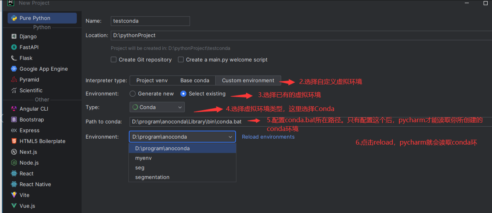

Pytorch 学习之路
一、环境安装
Anaconda
Anaconda 已经在之前机器学习数学基础部分搭建完了，这里没有记录，自己去搜别的吧。
新建 conda 环境
1 | conda create -n pytorch python=3.6 |
Pytorch 安装
进入 Pytorch 官网往下拉，然后就能看到配置的界面。因为我目前的显卡是 AMD 的，所以用不了 CUDA ，就选择 Windows-CPU-Conda , 复制命令行运行 , 并进行测试。
1 | conda install pytorch torchvision torchaudio cpuonly |
如果导入周没有报错的话，那就安装成功了。
PyCharm
PyCharm 主要是配置环境要折腾一下，如图:

其实我还是更愿意使用 vscode + jupyter notebook 。